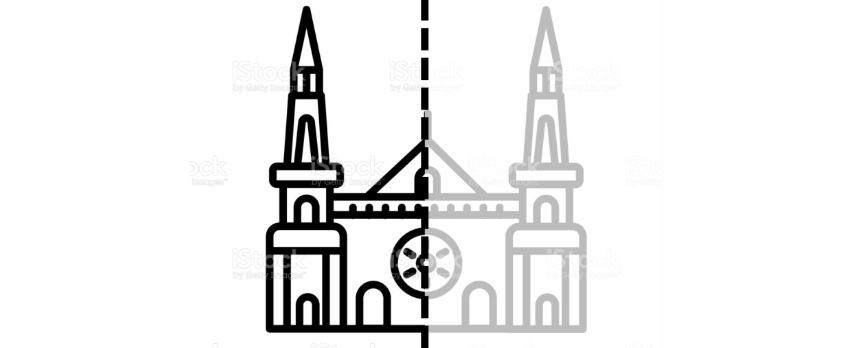
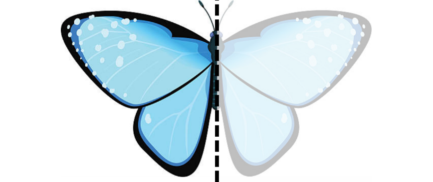
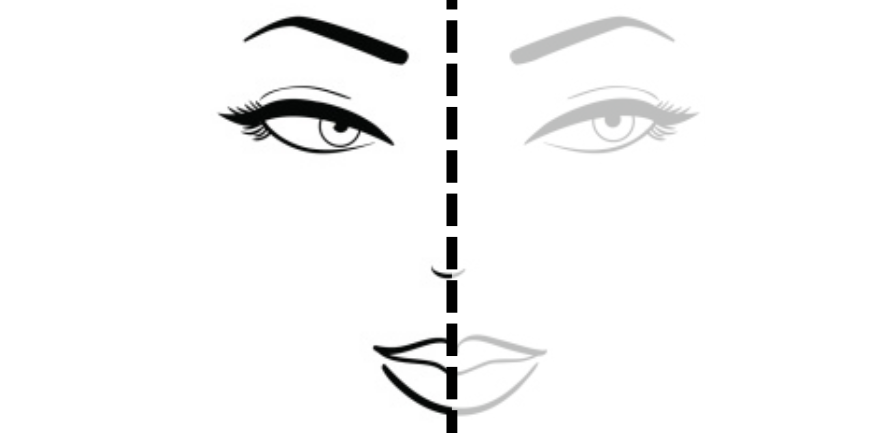

Este capítulo trata de assuntos essenciais no mundo do Design Gráfico e que costumam ser negligenciados em muitos cursos, que ao focar no ensino de uma única ferramenta, acabam por não transmitir as noções de desenho mais importante. O que abordaremos agora são conceitos e não necessitam de exercícios ou tutoriais, mas aconselho que procure fazer desenhos para aplicá-los de modo a fixar em sua memória.
Em diversos casos, um desenho pode ser feito pela metade e depois duplicado para formar o objeto completo. Esse recurso não é só utilizado para facilitar o trabalho ou poupar tempo, mas também garante que o objeto tenha simetria, ou seja, que ambos os lados tenham a mesma proporção, o que é muito mais difícil de ser conseguido desenhando cada lado de forma independente., um rosto, por exemplo, possui simetria, o que significa que traçando uma linha ao meio de um desenho de rosto e separando, ambas as partes podem ser sobrepostas que se coincidirão. Veja alguns exemplos de simetria:
A simetria é muito utilizada na arquitetura:
A simetria está presente em toda a natureza:
O rosto humano é o exemplo mais conhecido de simetria:
